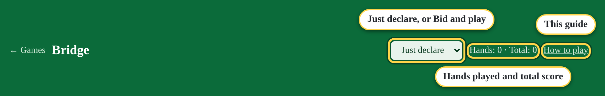
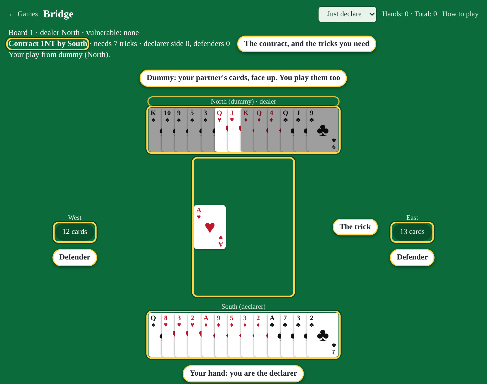
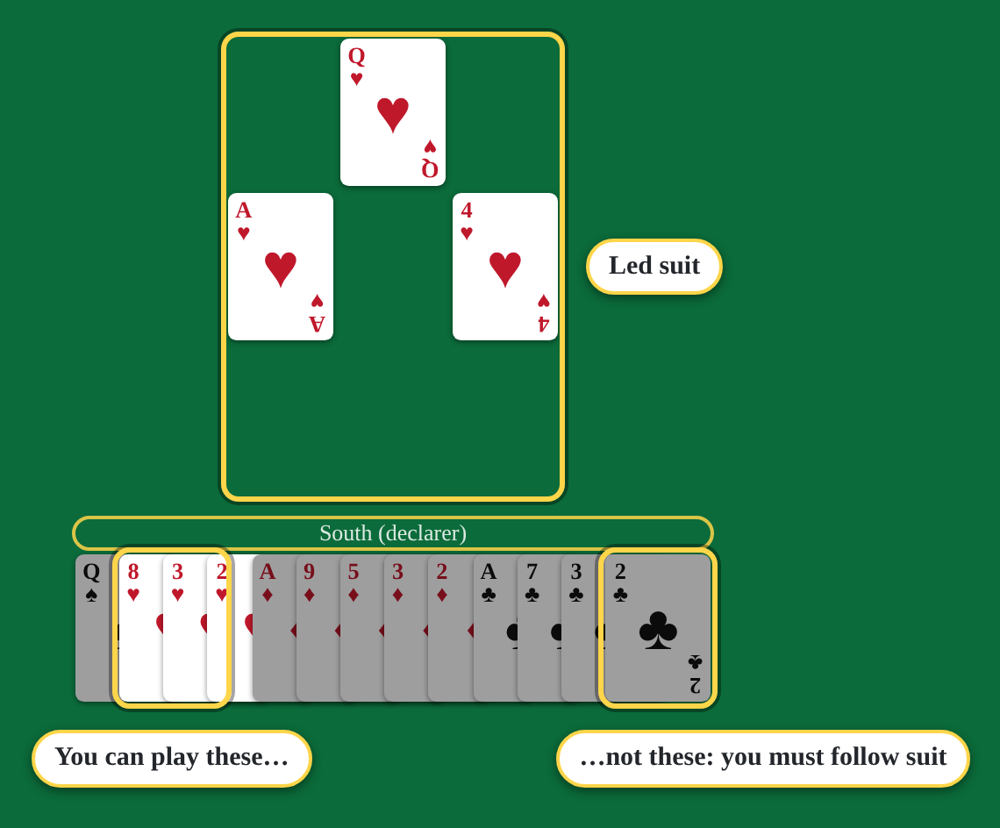
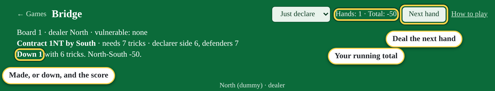
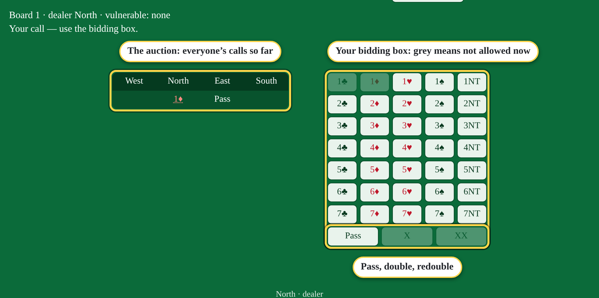
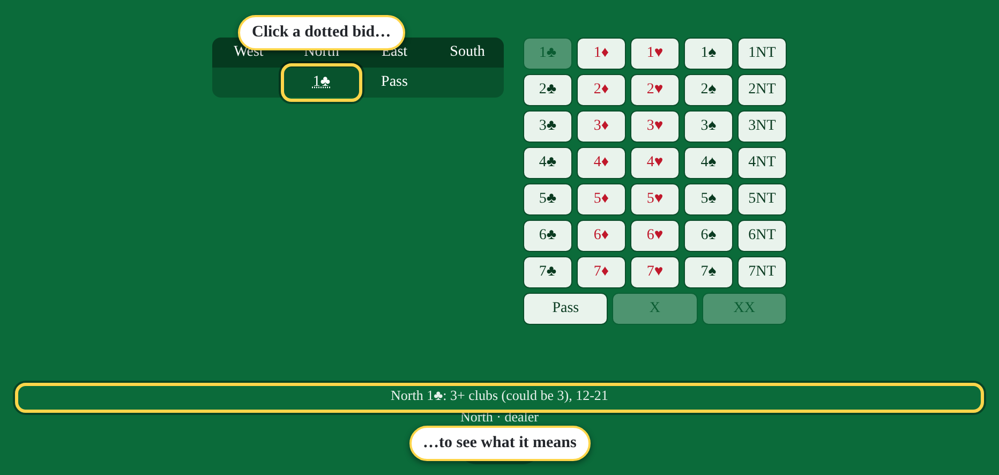

Two ways to play

- Just declare: the robots do the bidding, and you always play the hand as declarer. The quickest way to practise card play.
- Bid and play: you bid South's hand too, and play whatever the auction gives you: declarer, defender, or sitting out as dummy.
Each mode keeps its own count of hands and total score.
The table
North and South are partners, against East and West. Once the bidding is over, the player who won the contract for their side is the declarer. Their partner, the dummy, lays their cards face up after the first card is led, and the declarer plays both hands.

Tricks
- Each player plays one card in turn, clockwise. The four cards are a trick.
- You must follow suit: play the suit that was led if you have one. If you don't, play anything.
- The highest card of the suit led wins, unless someone played a trump (the contract's suit). Then the highest trump wins. In a notrump (NT) contract there are no trumps.
- Whoever wins a trick leads to the next one.
The contract says how many tricks the declarer's side must take: the number plus six. 1NT needs 7, 4♥ needs 10, 7♠ needs all 13.
Playing a card
When it's your turn the cards you're allowed to play are bright; the rest are greyed. Click a bright card to play it. On dummy's turn, you play from dummy the same way.

The result
After all 13 tricks you see whether the contract made or went down, and what North-South scored. Make it and your side scores; go down and the defenders score instead (more if you're vulnerable). Press Next hand to deal again.

Bidding (Bid and play)
Before the play, the four players bid for the contract in turn, starting with the dealer. A bid is a number and a suit (or NT): 1♣ is the lowest, then 1♦, 1♥, 1♠, 1NT, 2♣… up to 7NT. Each bid must be higher than the last. You can also pass, double (X) an opponent's bid, or redouble (XX) a double. Three passes in a row end the auction, and the last bid is the contract.

The robots bid a standard system (two-over-one, five-card majors, 1NT shows 15 to 17 points). Bids with a dotted underline have a meaning: click one to see it.

Quick reference
| Tricks needed | The contract's number + 6 |
|---|---|
| Follow suit | Always, if you can |
| Who wins a trick | Highest trump, else highest card of the suit led |
| Declarer | Plays both their own hand and the dummy |
| Auction ends | Three passes in a row after a bid |
| Bid meanings | Click a dotted bid |